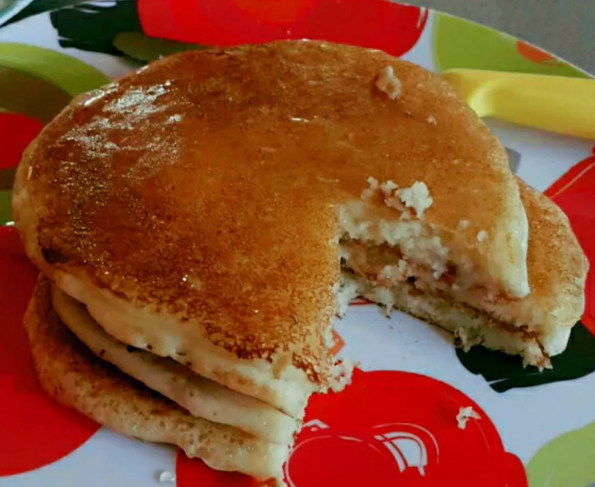

Pancakes

Description
These light, fluffy pancakes are perfect topped with fruit, jam, or a favorite syrup.
Ingredients
- 1 cup milk
- 1 egg
- 2 1/2 tablespoons vegetable oil, divided
- 1 cup sifted self-rising flour
Steps
- Whisk milk, egg, and 2 tablespoons oil together in a bowl. Stir in flour until combined.
- Heat remaining 1/2 tablespoon oil on a griddle over medium heat until drops of water sprinkled on it evaporate noisily. Working in batches, pour 1/8 cup batter (or 1/4 cup for larger pancakes) onto the griddle for each pancake. Cook until bubbles begin to form on top, 2 to 3 minutes. Flip with a metal spatula and cook until golden brown on the other side, about 1 more minute.
Back to Home